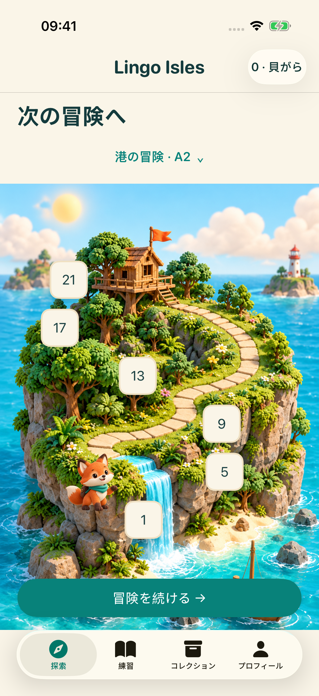
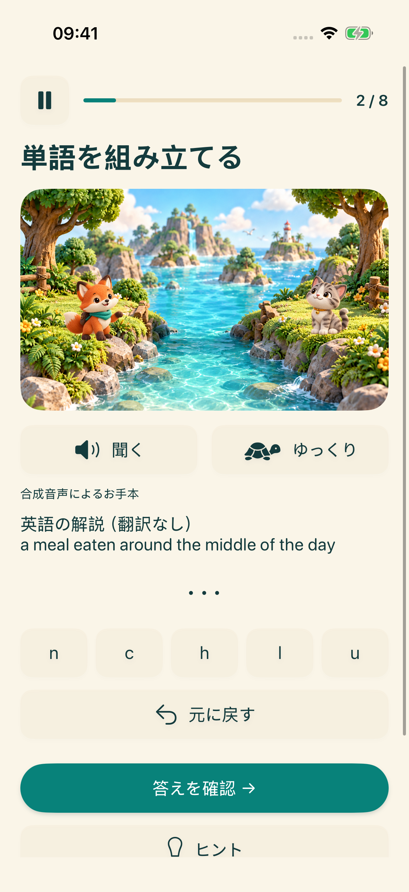
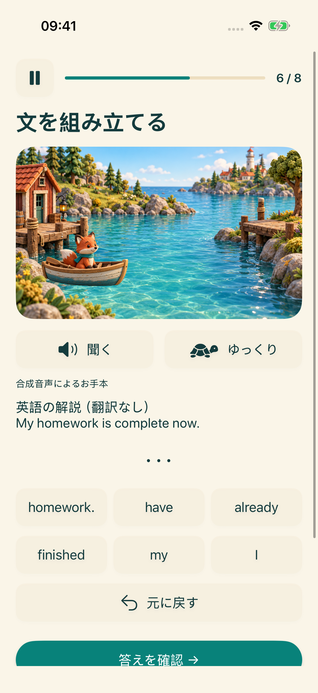
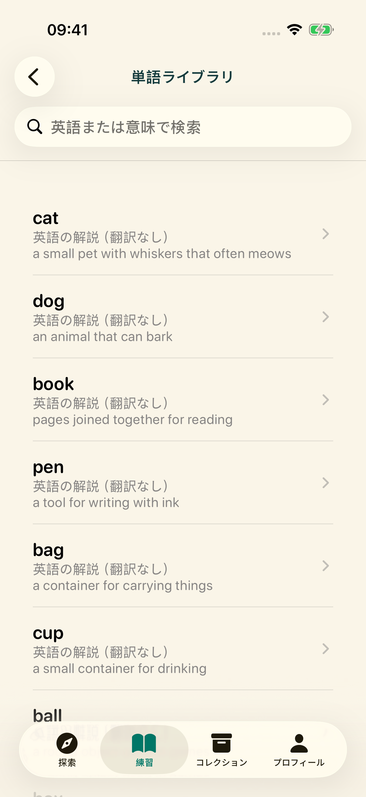

次の島が待っている
学習ステージを選んで、短い英語の練習をたどっていこう。
4つの学習の島を探検しよう。聞いて、単語をつくり、文を組み立て、自分の声でも挑戦。小さな発見を一つずつ。
冒険をのぞいてみるiPhoneとiPadでのリリースに向けて準備中


学習ステージを選んで、短い英語の練習をたどっていこう。

システム音声を聞きながら文字を並べて、英語のスペリングを練習。

単語を正しい順番に並べて、英文の仕組みを学ぼう。

単語ライブラリを探したり、お気に入りに保存したり。学んだ内容を振り返ろう。

録音して、聞き直して、もう一度。対応端末では、端末内での文字起こしも任意で使えます。発音を採点する機能ではなく、声に出す練習です。
画面表示は16言語に対応しています。学習の解説は英語と簡体字中国語で提供しています。その他の言語で翻訳がない場合は、英語の解説であることを明示して表示します。
学習コンテンツと進捗は端末に保存されます。アカウントや開発者が運営するクラウド同期は必要ありません。音声リソースは端末によって異なります。広告とプライバシー関連サービスにはネット接続が必要です。
18歳未満、または年齢区分が未設定のプロフィールでは、広告の処理を開始しません。成人向けの広告は、プライバシーの選択内容や配信状況に応じて表示されます。リワード広告の視聴は任意です。